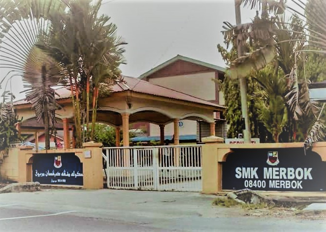

My primary school is Sekolah Kebangsaan Kampong Pasir, Kedah (SKKP). It was located at Simpang Tiga Pasir, Merbok where that place near from my home between school. I was study at here since 2005 until 2010. So, I usually go to school sent by parents on a motorcycle and some my friends come to school with ride a bicycle. In 2010 I took the exam in UPSR and got good results.
 My secondary school is Sekolah Menengah Kebangsaan Merbok, Kedah (SMKM). I got my SPM result at there in 2015. I have achieved my certificate of my PMR results in my Form 3. During my school, I was the class leader for two years and obtained a certificate as classrep. Besides that, I am also the best student in Kesusateraan Melayu and Pendidikan Seni Visual.
For high school I chose to further my studies which is Universiti Teknologi Mara in Kedah (UITMK). I majored in Information Management since semester 1. I made a lot of friends when I entered this college for the first time. Some of my friends have different majors. At UITM, I also stayed in the dorm for the first time until I finished the semester. While studying at UITM, I gained a lot of knowledge from the campus environment. I also participate in co-curricular activities such as being a club member, playing handball in my spare time, jogging with friends in the morning, attending events and more. Life on campus was the best experience for me.